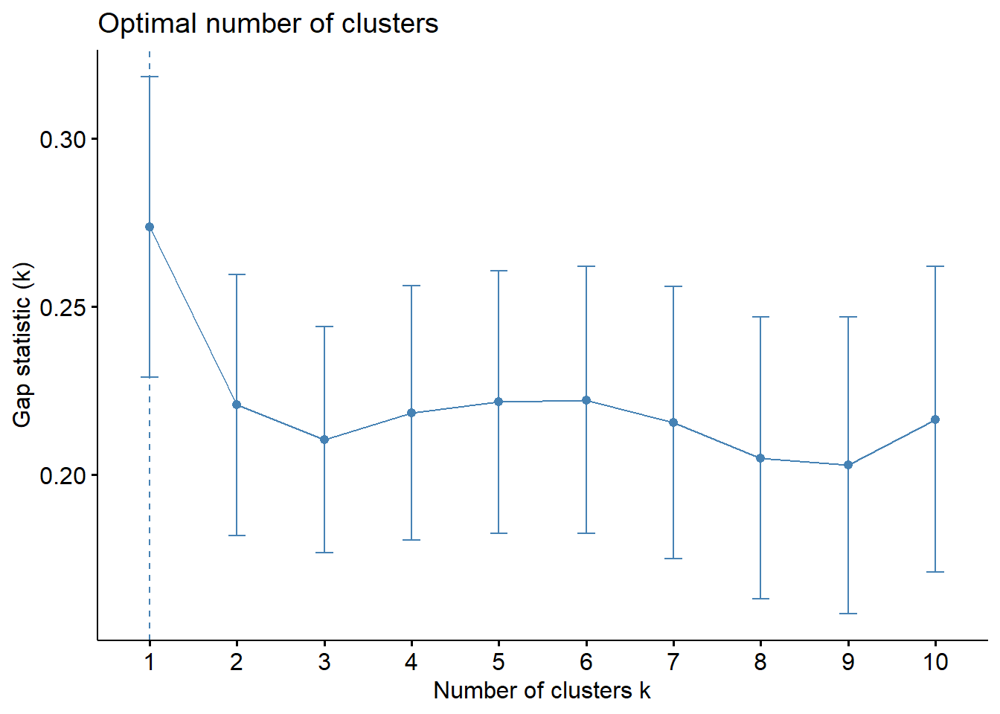
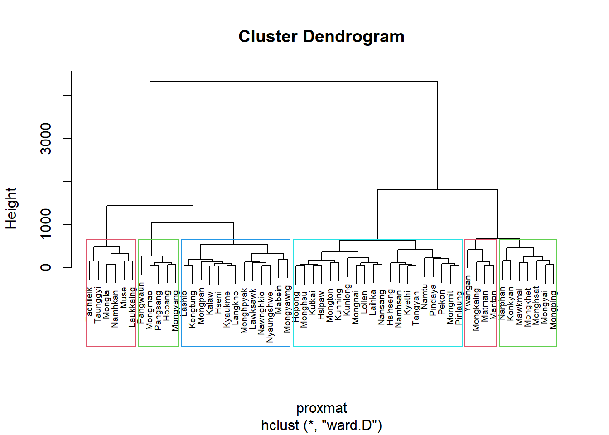
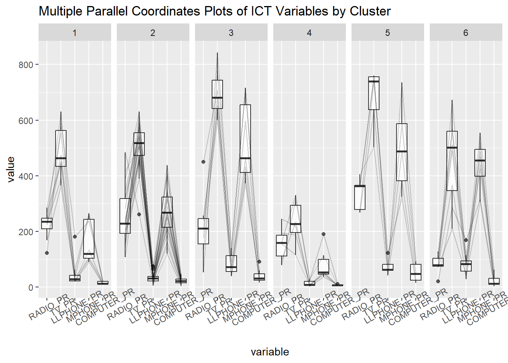

pacman::p_load(spdep, tmap, sf, ClustGeo,
ggpubr, cluster, factoextra, NbClust,
heatmaply, corrplot, psych, tidyverse, GGally)In-class Exercise 9
Geographical Segmentation with Spatially Constrained Clustering Techniques
1. Overview
In this hands-on exercise, I will learn more on performing how to delineate homogeneous region by using geographically referenced multivariate data. There are two major analysis, namely:
hierarchical cluster analysis; and
spatially constrained cluster analysis.
1.1 Learning Outcome
By the end of this hands-on exercise, I aim to accomplish the following learning:
to convert GIS polygon data into R’s simple feature data.frame by using appropriate functions of sf package of R;
to convert simple feature data.frame into R’s SpatialPolygonDataFrame object by using appropriate sf of package of R;
to perform custer analysis by using hclust() of Base R;
to perform spatially constrained cluster analysis using skater() of Base R; and
to visualise the analysis output by using ggplot2 and tmap package.
1.2 Installing Required Packages
Before we get started, it is important for us to install the necessary R packages into R and launch these R packages into R environment.
The R packages needed for this exercise are as follows:
Spatial data handling
- sf, rgdal and spdep
Attribute data handling
- tidyverse, especially readr, ggplot2 and dplyr
Choropleth mapping
- tmap
Multivariate data visualisation and analysis
- coorplot, ggpubr, and heatmaply
Cluster analysis
cluster
ClustGeo
Note
With tidyverse, we do not have to install readr, ggplot2 and dplyr packages separately. In fact, tidyverse also installs other very useful R packages such as tidyr.
1.3 Preparing the Datasets
Two data sets will be used in this study. They are:
Myanmar Township Boundary Data (i.e. myanmar_township_boundaries) : This is a GIS data in ESRI shapefile format. It consists of township boundary information of Myanmar. The spatial data are captured in polygon features.
Shan-ICT.csv: This is an extract of The 2014 Myanmar Population and Housing Census Myanmar at the township level.
Both data sets are download from Myanmar Information Management Unit (MIMU)
2.2 Import Data and Set Up Folders
Two data sets I will be using in this study are as follows:
Shan_sf.Rds: Myanmar Township Boundary Data (i.e. myanmar_township_boundaries) : This is a GIS data in ESRI shapefile format. It consists of township boundary information of Myanmar. The spatial data are captured in polygon features.
Shan_ICT.Rds: This is an extract of The 2014 Myanmar Population and Housing Census Myanmar at the township level.
shan_sf_cluster.Rds: this variable combines the shan_ict and shan_sf dataframes which leads to some redundant variables like dt.x
Both data sets are download from Myanmar Information Management Unit (MIMU)
shan_ict <- readRDS(file = "data/rds/shan_ict.Rds")
shan_sf <- readRDS(file = "data/rds/shan_sf.Rds")
Hsan_sf_cluster <- readRDS(file = "data/rds/shan_sf_cluster.Rds")The imported InfoComm variables are extracted from The 2014 Myanmar Population and Housing Census Myanmar.
# Let's inspect
glimpse(Hsan_sf_cluster)Rows: 55
Columns: 19
$ ST <chr> "Shan (North)", "Shan (South)", "Shan (South)", "Shan (S…
$ ST_PCODE <chr> "MMR015", "MMR014", "MMR014", "MMR014", "MMR015", "MMR01…
$ TS <chr> "Mongmit", "Pindaya", "Ywangan", "Pinlaung", "Mabein", "…
$ TS_PCODE <chr> "MMR015017", "MMR014006", "MMR014007", "MMR014009", "MMR…
$ TT_HOUSEHOLDS <dbl> 13652, 17544, 18348, 25504, 8632, 41341, 20084, 25957, 3…
$ RADIO <dbl> 3907, 7324, 8890, 5908, 3880, 11607, 6399, 10048, 11257,…
$ TV <dbl> 7565, 8862, 4781, 13816, 6117, 25285, 10762, 16353, 1765…
$ LLPHONE <dbl> 482, 348, 219, 728, 628, 1739, 800, 818, 1239, 1123, 310…
$ MPHONE <dbl> 3559, 2849, 2207, 6363, 3389, 16900, 4315, 8321, 10409, …
$ COMPUTER <dbl> 166, 226, 81, 351, 142, 1225, 381, 565, 508, 878, 2028, …
$ INTERNET <dbl> 321, 136, 152, 737, 165, 1741, 316, 556, 1216, 936, 2020…
$ RADIO_PR <dbl> 286.18517, 417.46466, 484.52147, 231.64994, 449.49027, 2…
$ TV_PR <dbl> 554.1313, 505.1300, 260.5734, 541.7189, 708.6423, 611.62…
$ LLPHONE_PR <dbl> 35.306182, 19.835841, 11.935906, 28.544542, 72.752549, 4…
$ MPHONE_PR <dbl> 260.69440, 162.39170, 120.28559, 249.49028, 392.60890, 4…
$ COMPUTER_PR <dbl> 12.159391, 12.881897, 4.414650, 13.762547, 16.450417, 29…
$ INTERNET_PR <dbl> 23.513038, 7.751938, 8.284282, 28.897428, 19.114921, 42.…
$ CLUSTER <chr> "1", "1", "2", "1", "3", "3", "1", "3", "3", "3", "4", "…
$ geometry <MULTIPOLYGON [°]> MULTIPOLYGON (((96.96001 23..., MULTIPOLYGO…
Observations
The resulting output of the shan_ict_cluster variabble includes attribute data as well as geometry variables which consists of multipolygons. This simple feature output has a total of 55 rows and 19 columns, which has been tidied for our in-class exercise.
2. Conventional Hierarchical Clustering
Take note that the hclust() function must first be used before the k value can be selected. In this case, hclust_ward is not a simple output data, but a hierarchical clustering object class. We have used k = 6 to output the number of groups based on our analysis of the optimal k-value in the chart
proxmat <- dist(shan_ict, method = "euclidean")
hclust_ward <- hclust(proxmat, method = "ward.D")
groups <- as.factor(cutree(hclust_ward, k = 6))*Recall our analysis of the optimal k-value as discovered in Hands-on Exercise 9

We do not use left_join() since we don’t want to sort the sequence. Beisdes using as.matrix(), we can also convert it into a data table or tibble format. Note that using variables like TS.x is not user-friendly and should be renamed as shown. We will also drop columns not relevant to us, e.g. columns 3 to 4, and 7 to 9.
shan_sf_cluster <- cbind(shan_sf,
as.matrix(groups)) %>%
rename('CLUSTER' = 'as.matrix.groups.') %>%
select(-c(3:4, 7:9)) %>%
rename(TS = TS.x)plot(hclust_ward, cex = 0.6)
rect.hclust(hclust_ward, k = 6, border = 2:5)
In Chapter 2 of Prof Kam’s book and our in-class ex 2, we used 1) qtm() and 2) call tm.shape() and other functions like tm_fill(). However, we will use the QTM() function of the tmap package which serves as a fast way of generating the map for us.
Note that the default number of colours the QTM() function will classify to is 5 so any dataset with >5 categories should manually include the colours we need.
qtm(shan_sf_cluster, "CLUSTER")
3. Spatially Constrained Clustering
If the clustering values are close (attribute) and they are goegraphically close in terms of proximity, we form spatially constrained clustering. This form of clustering attempts to create more spatial homogeneity by using two methods…
- Skater: a hard spatial classification method
- ClustGeo: a soft spatial classification method
3.1 SKATER Algorithm (Spatial ’k’luster Analysis by Tree Edge Removal)
By generating the clustering results, we assign a weight by adding the attribute value to the edges of each node, which aims to refine the clusters through rounds of iterations.
3.1.1 Computing Nearest Neighbours
To build our minimum spanning tree, we first calculate the number of neighbours each node has.
shan.nb <- poly2nb(shan_sf)
summary(shan.nb)Neighbour list object:
Number of regions: 55
Number of nonzero links: 264
Percentage nonzero weights: 8.727273
Average number of links: 4.8
Link number distribution:
2 3 4 5 6 7 8 9
5 9 7 21 4 3 5 1
5 least connected regions:
3 5 7 9 47 with 2 links
1 most connected region:
8 with 9 links
Note
Note that we do not need to convert the data to sp since the two previous versions of SPDEP can accept sf variables!
3.1.2 Visualise the Neighbours
Here we plot the nodes and their connecting edges to adjacent neighbours. It is worth noting that not all plots are relevant for us - Prof Kam suggests to think about what your end-users want to see and be selective of what your app should expose :)
coords <- st_coordinates(
st_centroid(shan_sf))Warning: st_centroid assumes attributes are constant over geometriesplot(st_geometry(shan_sf),
border=grey(.5))
plot(shan.nb,
coords,
col="blue",
add=TRUE)
3.1.3 Computing Minimum Spanning Tree
1) Calculate edge costs
lcosts <- nbcosts(shan.nb, shan_ict)2) Incorporating these costs into a weights object
shan.w <- nb2listw(shan.nb,
lcosts,
style = 'B')
summary(shan.w)Characteristics of weights list object:
Neighbour list object:
Number of regions: 55
Number of nonzero links: 264
Percentage nonzero weights: 8.727273
Average number of links: 4.8
Link number distribution:
2 3 4 5 6 7 8 9
5 9 7 21 4 3 5 1
5 least connected regions:
3 5 7 9 47 with 2 links
1 most connected region:
8 with 9 links
Weights style: B
Weights constants summary:
n nn S0 S1 S2
B 55 3025 76267.65 58260785 5220160043) Computing MST
The mstree() function is of the spdep package which combines the weight matrix and proximity matrix together.
shan.mst <- mstree(shan.w)After computing the MST, we can check its class and dimension by using the code chunk below. It should return a list-object data format
head(shan.mst) [,1] [,2] [,3]
[1,] 16 34 119.86993
[2,] 34 24 113.80917
[3,] 16 13 131.67061
[4,] 13 28 92.79567
[5,] 28 12 78.78999
[6,] 12 49 59.694784) Visualise the MST
plot(st_geometry(shan_sf), border=gray(.5))
plot.mst(shan.mst,
coords,
col="blue",
cex.lab=0.7,
cex.circles=0.005,
add=TRUE)
5) Computing Spatially Constrained Clusters
Next, we will compute the spatially constrained cluster using skater() of spdep package.
clust6 <- spdep::skater(edges = shan.mst[,1:2],
data = shan_ict,
method = "euclidean",
ncuts = 5)The result of the skater() is an object of class skater. We can examine its contents by using the code chunk below. As seen below, this is a list of 8 list items.
str(clust6)List of 8
$ groups : num [1:55] 3 3 6 3 3 3 3 3 3 3 ...
$ edges.groups:List of 6
..$ :List of 3
.. ..$ node: num [1:22] 13 48 45 55 52 37 34 16 25 54 ...
.. ..$ edge: num [1:21, 1:3] 48 55 45 37 34 16 52 25 16 13 ...
.. ..$ ssw : num 3423
..$ :List of 3
.. ..$ node: num [1:18] 47 27 53 38 42 15 41 51 43 32 ...
.. ..$ edge: num [1:17, 1:3] 53 15 42 38 41 51 15 27 15 43 ...
.. ..$ ssw : num 3759
..$ :List of 3
.. ..$ node: num [1:11] 2 6 8 1 36 4 10 9 46 5 ...
.. ..$ edge: num [1:10, 1:3] 6 1 8 36 4 6 8 10 10 9 ...
.. ..$ ssw : num 1458
..$ :List of 3
.. ..$ node: num [1:2] 44 20
.. ..$ edge: num [1, 1:3] 44 20 95
.. ..$ ssw : num 95
..$ :List of 3
.. ..$ node: num 23
.. ..$ edge: num[0 , 1:3]
.. ..$ ssw : num 0
..$ :List of 3
.. ..$ node: num 3
.. ..$ edge: num[0 , 1:3]
.. ..$ ssw : num 0
$ not.prune : NULL
$ candidates : int [1:6] 1 2 3 4 5 6
$ ssto : num 12613
$ ssw : num [1:6] 12613 10977 9962 9540 9123 ...
$ crit : num [1:2] 1 Inf
$ vec.crit : num [1:55] 1 1 1 1 1 1 1 1 1 1 ...
- attr(*, "class")= chr "skater"We are also able to check the cluster assignment.
ccs6 <- clust6$groups
ccs6 [1] 3 3 6 3 3 3 3 3 3 3 2 1 1 1 2 1 1 1 2 4 1 2 5 1 1 1 2 1 2 2 1 2 2 1 1 3 1 2
[39] 2 2 2 2 2 4 1 3 2 1 1 1 2 1 2 1 1
Note
The most interesting component of this list structure is the groups vector containing the labels of the cluster to which each observation belongs (as before, the label itself is arbitary). This is followed by a detailed summary for each of the clusters in the edges.groups list. Sum of squares measures are given as ssto for the total and ssw to show the effect of each of the cuts on the overall criterion.
We can use as.factor() to encode our numerical data accordingly. Note that the cluster numbers will be sorted in ascending format by default as 1,2,3…5.
library(sp)
plot(st_geometry(shan_sf),
border=gray(.5))
plot(clust6,
coords,
cex.lab=.7,
groups.colors=c("red","green","blue", "brown", "pink"),
cex.circles=0.005,
add=TRUE)Warning in segments(coords[id1, 1], coords[id1, 2], coords[id2, 1], coords[id2,
: "add" is not a graphical parameter
Warning in segments(coords[id1, 1], coords[id1, 2], coords[id2, 1], coords[id2,
: "add" is not a graphical parameter
Warning in segments(coords[id1, 1], coords[id1, 2], coords[id2, 1], coords[id2,
: "add" is not a graphical parameter
Warning in segments(coords[id1, 1], coords[id1, 2], coords[id2, 1], coords[id2,
: "add" is not a graphical parameter
Lastly, let us plot the map using the qtm() function of the spdep package.
groups_mat <- as.matrix(clust6$groups)
shan_sf_spatialcluster <- cbind(shan_sf_cluster, as.factor(groups_mat)) %>%
rename(`SP_CLUSTER`=`as.factor.groups_mat.`)
qtm(shan_sf_spatialcluster, "SP_CLUSTER")
3.2 ClustGeo Method
This is a soft classification where the user can manipulate and select specific interactions they desire, e.g. spatial interactions, where the user can choose specify a certain range.
3.2.1 Compute spatial distance matrix
The first step we should take is to utilise the st_distance() function of the sf package to compute the distance matrix.
dist <- st_distance(shan_sf, shan_sf)
distmat <- as.dist(dist)
Note
The fieldnames will be the destination while the row numbers are numbers. Hence, we keep the distance matri. Notice that as.dist() is used to convert the data frame into matrix.
3.2.2 Plotting Cluster Graphs
Next, choicealpha() will be used to determine a suitable value for the mixing parameter alpha as shown in the code chunk below. The 0.1 breaks interval will output a graph that will create intervals of 0.1
cr <- choicealpha(proxmat, distmat,
range.alpha = seq(0, 1, 0.1),
K=6, graph = TRUE)

3.2.3 Saving ClustGeo Output
You will want to save the output and await for user to click a button on the app before the app exposes the updated charts.
clustG <- hclustgeo(proxmat, distmat, alpha = 0.3)
groups <- as.factor(cutree(clustG, k=6))
shan_sf_Gcluster <- cbind(shan_sf, as.matrix(groups)) %>%
rename(`CLUSTER` = `as.matrix.groups.`)qtm(shan_sf_Gcluster, "CLUSTER")
3.2.4 Multivariate Visualisation
ggarray() is an extension of ggplot(). By using a ssimilar y-axis and facet-ing these plots in a row, we can easily visualise how each cluster might differ by ICT variables.
shan_sf_ngeo_cluster <- cbind(shan_sf, as.matrix(groups)) %>%
rename(`CLUSTER` = `as.matrix.groups.`)
ggparcoord(data = shan_sf_ngeo_cluster,
columns = c(17:21),
scale = "globalminmax",
alphaLines = 0.2,
boxplot = TRUE,
title = "Multiple Parallel Coordinates Plots of ICT Variables by Cluster") +
facet_grid(~ CLUSTER) +
theme(axis.text.x = element_text(angle = 30))
Note
I made a realisation that we should use a set.seed() function to ensure that the cluster numbers do not change since it will inherently be generated differently for each run of the codes. E.g. cluster 1 can become cluster 2’s patterns the next time we run the codes.